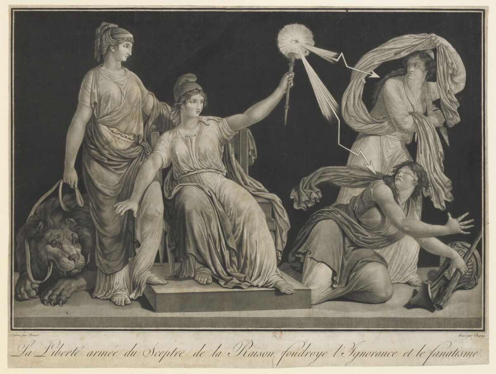

FR · 1793A Liberdade armada do Cetro da Razão · gravura.
A Liberdade armada do Cetro da Razão
Descrição curta
França · 1793 · gravura · regime fundacional.
Descrição longa
Ficha do corpus iconocrático para A Liberdade armada do Cetro da Razão: alegoria feminina como tecnologia visual do Estado, classificada no regime fundacional.
Fonte & proveniência
- Crédito
- Imagem do corpus ICONOCRACIA: A Liberdade armada do Cetro da Razão.
- Direitos
- Uso acadêmico e curatorial; verificar direitos junto à instituição detentora antes de reutilização comercial.
- Licença
- Todos os direitos reservados salvo indicação específica da fonte.
Dados canônicos
Esta ficha é gerada a partir de data/corpus.json. Última geração: 2026-06-24.